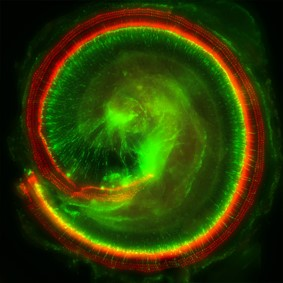

This Research Focuses On The Cochlea Which Is A Vital Part Of
The Inner Ear As It Plays A Direct Role With Hearing And Balance.
As It Not Only Assists The Inner Ear In Translating Sounds To
Neural Messages It Also Assists The Body With Balance.